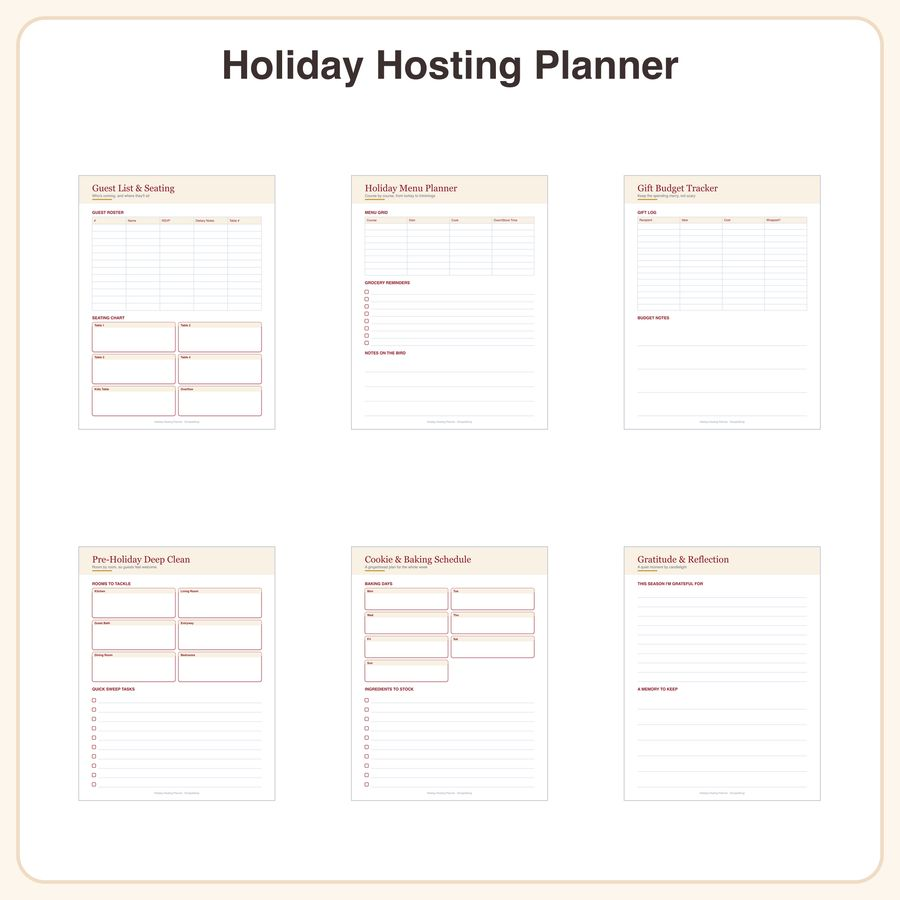

$5.99
View on EtsyBreathe easy this season 🕯️ The Holiday Hosting Planner is a calm, clearly organized printable that keeps every detail of your Thanksgiving-through-New-Year's hosting in one place — guests, menus, gifts, cleaning, baking, and gratitude, all in a warm cranberry-and-gold design on a soft cream background with a cozy serif font. What's included (6 pages): • Guest List & Seating Tracker – simple table layout to track invites, RSVPs, and seating • Holiday Menu Planner – course-by-course fill-in grid with plain text labels for each course • Gift Budget Tracker – columns for recipient, idea, cost, and wrapped status • Pre-Holiday Deep Clean Checklist – room-by-room checkboxes to divide up tasks • Cookie & Baking Schedule – day-of-week slots to plan your baking week • Gratitude & Reflection Journal Page – open space with simple text headers for holiday reflections Design note: headers are done in a warm hand-lettered style in cranberry and gold; the rest of each page uses clean text labels, checkboxes, and tables — no illustrated icons or decorative line-art borders are included on these pages. File formats & sizes: • High-resolution PDF, sized for both US Letter (8.5x11") and A4 • Print at home or at a copy shop, or use digitally in GoodNotes/Notability/OneNote on tablet How to use: 1. Download instantly after purchase (no physical item shipped) 2. Print all pages or import the PDF into your favorite note-taking app 3. Fill in by hand or with a stylus — reuse each holiday season License: For personal and small-business use (up to 500 printed/finished units). Please don't resell, redistribute, or share the files themselves. Honest disclosure: This design was created by our shop with the help of AI tools as part of our creative process.